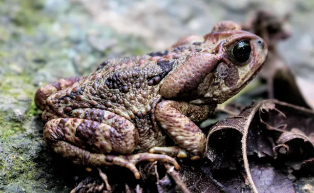
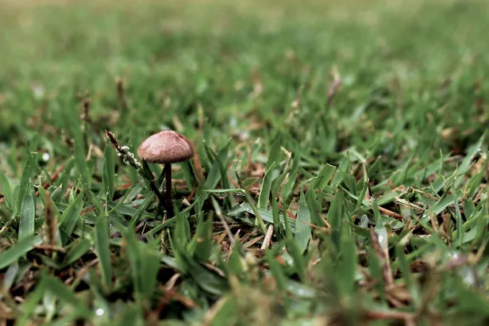
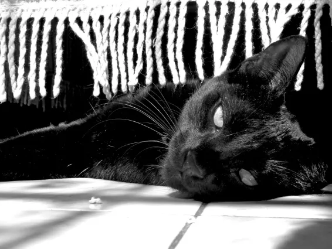
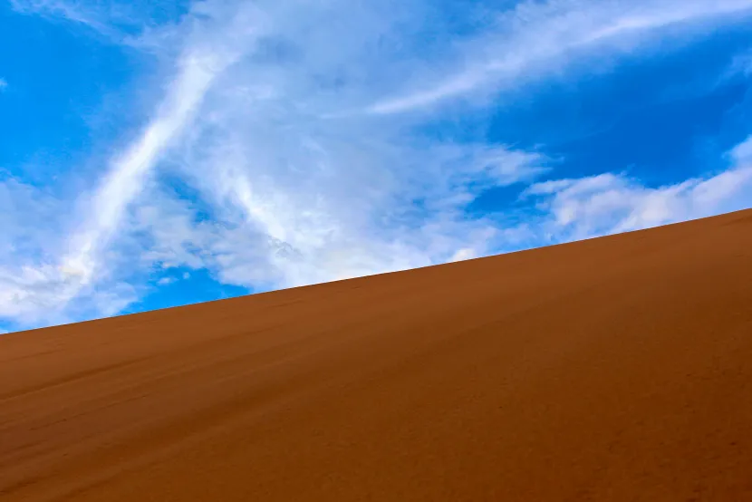
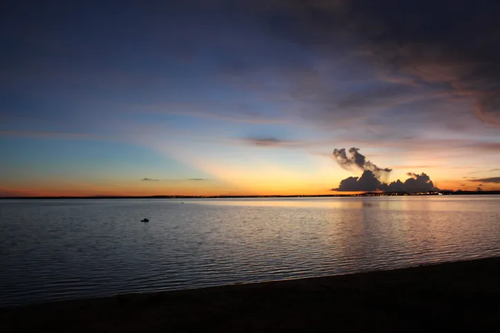
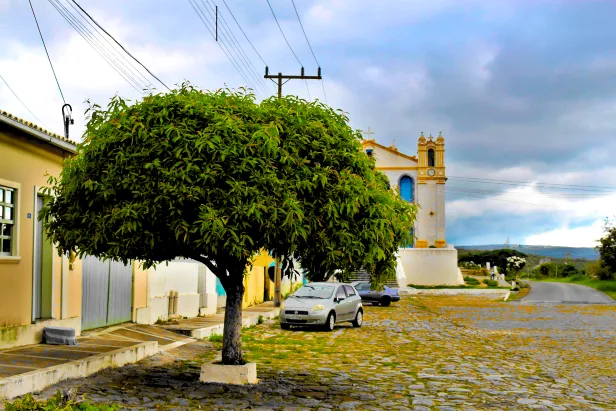
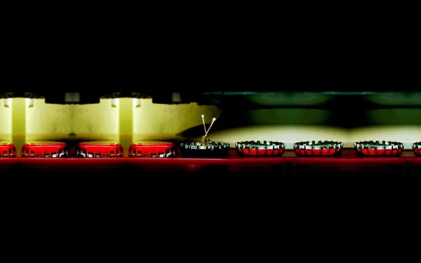
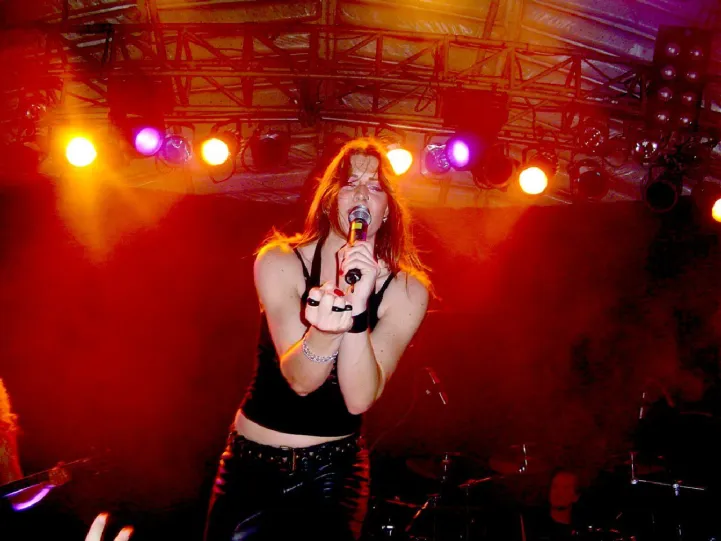

Lua cheia em 55mm f/5.6 1/160 ISO 100T5i EF-S 18-55, 4 de abril de 2023Palhacito2 de abril de 2023Lua minguante em 55mm f/8.0 0.3" ISO 100T5i EF-S 18-55, 24 de março de 2023Morro Dois IrmãosPraia de Ipanema, Rio de Janeiro, 21 de fevereiro de 2023Cachorro andarilhoBichinho, Prados, Minas Gerais, 21 de janeiro de 2023Serra de São JoséTiradentes, Minas Gerais, 20 de janeiro de 2023Cachorro no restauranteTiradentes, Minas Gerais, 20 de janeiro de 2023Camuflado na Gruta da JudeiaPresidente Figueiredo, Amazonas, 19 de outubro de 2022Jacaré-açu no Instituto Nacional de Pesquisas da Amazônia - INPAManaus, Amazonas, 18 de outubro de 2022BlueAmazon Tupana Lodge, Amazonas, 17 de outubro de 2022PlutoAmazon Tupana Lodge, Amazonas, 15 de outubro de 2022Céu da manhã na AmazôniaAmazon Tupana Lodge, Amazonas, 15 de outubro de 2022Lima e Eduardo no Rio TupanaAmazon Tupana Lodge, Amazonas, 15 de outubro de 2022PitocoAmazon Tupana Lodge, Amazonas, 14 de outubro de 2022Nascer do Sol na AmazôniaAmazon Tupana Lodge, Amazonas, 14 de outubro de 2022Nascer do Sol no Rio TupanaAmazon Tupana Lodge, Amazonas, 14 de outubro de 2022Fungos na trilhaVisconde de Mauá, Rio de Janeiro, 8 de outubro de 2022
 Sapinho na trilhaVisconde de Mauá, Rio de Janeiro, 8 de outubro de 2022Vista do Pico da Pedra SeladaVisconde de Mauá, Rio de Janeiro, 8 de outubro de 2022Pico da Pedra SeladaVisconde de Mauá, Rio de Janeiro, 8 de outubro de 2022Caminho Oswaldo CruzFiocruz, Rio de Janeiro, 14 de abril de 2022Alfredo Peixerico3 de abril de 2022Cachorro na Pequena FinlândiaPenedo, Rio de Janeiro, 31 de agosto de 2021
 Cogumelo no jardimPenedo, Rio de Janeiro, 30 de agosto de 2021Dily e Melissa22 de agosto de 2021Paçoca15 de agosto de 2021Melissa6 de junho de 2021Café da manhã dos passarinhosVisconde de Mauá, Rio de Janeiro, 1 de janeiro de 2020
 Dily21 de abril de 2019Cogumelo na Cachoeira da FormigaJalapão, Rio de Janeiro, 23 de março de 2019
 Dunas do JalapãoJalapão, Tocantins, 21 de março de 2019"All The Small Things"Jalapão, Tocantins, 21 de março de 2019Horizonte visto da Pedra FuradaJalapão, Tocantins, 20 de março de 2019Primeira folha do outonoJalapão, Tocantins, 19 de março de 2019
 Pôr do Sol na Praia da GraciosaPalmas, Tocantins, 18 de março de 2019Morro do Urubuzinho à noiteRio de Janeiro, 1 de dezembro de 2018Cogumelo no Vale do AlcantiladoVisconde de Mauá, Rio de Janeiro, 1 de setembro de 2018Café da manhã dos passarinhosLençóis, Bahia, 24 de março de 2018
 Árvore na rua da Igreja Matriz Santa IsabelMucugê, Bahia, 21 de março de 2018Cânion da Cachoeira do BuracãoChapada Diamantina, Bahia, 20 de março de 2018Calango no Rio RoncadorChapada Diamantina, Bahia, 19 de março de 2018Parque Estadual Campos do JordãoCampos do Jordão, São Paulo, 25 de março de 2017Cerrado até o horizonteBonito, Mato Grosso do Sul, 13 de agosto de 2015LaraBonito, Mato Grosso do Sul, 11 de agosto de 2015Vista do pôr do sol sobre o EPCOTWalt Disney World, Florida, 2 de janeiro de 2012
 "Steel Life"27 de abril de 2008Yuri24 de março de 2008Gasparzinho5 de março de 2008
 Floor Jansen, After ForeverCirco Voador, Rio de Janeiro, 15 de outubro de 2006Barney25 de julho de 2006Fred22 de maio de 2006"Françoise et Richard"Praia de Ipanema, Rio de Janeiro, 10 de março de 2006Barney filhote8 de outubro de 2005Fred filhote8 de outubro de 2005Loira procurando uma casa nova para ter seus filhotes2 de julho de 2005Yuri13 de abril de 2005